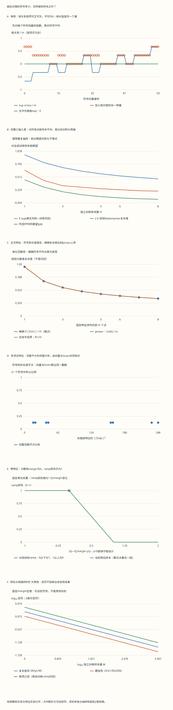

本页目录
统计学习 III · Rademacher复杂度、核几何与margin保证
前置：slt-01/02 的风险、独立抽样与对称化；内积、范数、条件期望和 McDiarmid 不等式。目标：亲自算一次符号平均，证明经验复杂度版泛化界，并说明核矩阵、范数约束和固定margin阈值分别做了什么。
1. 先看四次选择：为什么“先挑最好”不能与平均交换？
只有两个候选向量，也能出现非零复杂度。
在两个观测位置上，候选函数的值分别是 \(v_1=(1,0)\)、\(v_2=(0,1)\)。独立符号 \(\sigma_1,\sigma_2\) 各以一半概率取 \(+1\)、\(-1\)。对每个符号向量，先选择相关和最大的候选，再除以样本数 \(m=2\)。
| 符号 | 与 \(v_1\) 的相关和 | 与 \(v_2\) 的相关和 | 最大相关和除以2 |
|---|---|---|---|
| \((-1,-1)\) | \(-1\) | \(-1\) | \(-1/2\) |
| \((+1,-1)\) | \(1\) | \(-1\) | \(1/2\) |
| \((-1,+1)\) | \(-1\) | \(1\) | \(1/2\) |
| \((+1,+1)\) | \(1\) | \(1\) | \(1/2\) |
四行平均得到 \(1/4\)。如果先对每个固定候选把符号平均掉，它们的平均相关都是零，最后再取最大仍是零。差别在于：前一种允许所选函数随符号改变，后一种把这种选择能力先平均掉了。
单次最大相关和可以为负；四行平均却非负。本页使用“不在上确界内加绝对值、归一化为 \(1/m\)”的定义。若把表中相关和先取绝对值，每行都得到 \(1/2\)，平均变成 \(1/2\)，那是另一个量。
实验分为两个空间。有限概率实验沿用三输入分类问题，能精确计算训练样本的全部可能性；另一个特征实验用单位范数球和核矩阵，展示一个无限函数类怎样计算复杂度。两者共享小样本数控件，但不是同一份总体数据。
无脚本对照：六份完整记录保存全部符号、理想训练计数、特征与Gram矩阵，以及每个样本量的固定阈值惩罚。小数是显示近似，整数重数和概率分子另存于下载记录。

| 预设 | m | 损失类经验R | E sup-gap | 特征分数类精确R | Jensen上界 | 当前ramp训练风险 |
|---|---|---|---|---|---|---|
| default | 6 | 0.291666667 | 0.234207 | 0.3125 | 0.40824829 | 0 |
| singleton | 6 | 0 | 0 | 0.3125 | 0.40824829 | 0 |
| orthogonal | 8 | 0.2421875 | 0.203086926 | 0.353553391 | 0.353553391 | 0.875 |
| polynomial | 4 | 0.375 | 0.2889 | 2.43736273 | 2.6925824 | 0 |
| zero | 6 | 0.291666667 | 0.234207 | 0 | 0 | 1 |
| scaled | 6 | 0.291666667 | 0.234207 | 0.625 | 0.816496581 | 0 |
下载六份完整记录。有限概率实验与单位球特征实验各有明确的样本空间。固定种子只是本次示例；总体概率通过完整多项式枚举计算。margin阈值的单独保证不能直接用来支持同一份数据上的任意调参。
2. 固定样本、随机符号、随机训练集：三层对象
固定非空函数类 \(\mathcal F\)，以及样本 \(S=(z_1,\ldots,z_m)\)。经验 Rademacher 复杂度定义为
这里先固定 \(S\)，只对独立公平符号取平均。若 \(S\sim\mathcal D^m\) 也来自独立同分布抽样，再定义 \(\mathfrak R_m(\mathcal F)=\mathbb E_S\widehat{\mathfrak R}_S(\mathcal F)\)。带帽子的是依赖这份样本的量；不带帽子的是对所有训练集平均后的量。
对一个损失函数 \(f\)，真实平均为 \(Pf=\mathbb E_{Z\sim\mathcal D}f(Z)\)，经验平均为 \(P_Sf=m^{-1}\sum_i f(z_i)\)。一次泛化差 \(Pf-P_Sf\) 与经验复杂度也不相同：前者需要总体分布，后者只需要这份样本上全类的函数值。
本页有限实验将总体声明为已知，类别概率用整数除以 \(20000\) 表示，便于核算真实平均。固定种子生成的轨迹只是一个可重放例子；对理想独立抽样的概率和期望，另用全部训练计数及多项式重数计算。可重放不等于概率保证，精确的条件符号平均也不等于总体期望。
本页默认上确界与相关事件可测、期望存在；有限类没有这些技术障碍。对于一般无限类须满足标准可测性条件。下面的泛化定理还要求损失取值于 \([0,1]\)；实值分数类本身可以不在该区间，但必须先经合适的有界损失转换。
3. 单例为零、平移不变，以及标签不改变的那一半
固定任意 \(f_0\in\mathcal F\)，有 \(\mathbb E_\sigma\sup_f\sum_i\sigma_i f(z_i)\ge\mathbb E_\sigma\sum_i\sigma_i f_0(z_i)=0\)，所以复杂度非负。若只有这一条函数，等号成立。它可以是一个总损失为 \(1\) 的糟糕函数；复杂度仍是零，因为类中没有可供选择的其他函数。
给全类加同一个固定函数 \(g\)，每个符号下的上确界增加 \(\sum_i\sigma_i g(z_i)\)，其平均为零，所以 \(\widehat{\mathfrak R}_S(\mathcal F+g)=\widehat{\mathfrak R}_S(\mathcal F)\)。实验把每个损失加 \(7\)，记录逐行的变化；加法后的平均复杂度不变。这里检验的是组合性质，没有把 \([7,8]\) 值函数直接代入 \([0,1]\) 损失定理。
若 \(\mathcal F\subseteq\mathcal G\)，每个符号下可选对象增多，复杂度不减。线性泛函在凸包上的上确界等于在原集合上的上确界，所以取凸包也不改变复杂度。这些结论都使用同一个固定样本与同一种定义。
对二分类，写预测 \(g_h(x)=2h(x)-1\in\{-1,1\}\)，标签也写为 \(y_i\in\{-1,1\}\)。零一损失为 \((1-y_i g_h(x_i))/2\)。第一项的符号平均为零，而 \(-\sigma_i y_i\) 仍是一组独立公平符号，故损失类的经验复杂度恰为分数类的一半：
\(\widehat{\mathfrak R}_{(X,Y)}(\ell\circ\mathcal H)=\tfrac12\widehat{\mathfrak R}_{X}(g_{\mathcal H})\)。
因此固定输入与固定二分类类后，改变标签本身不会改变这个经验复杂度。训练误差、选出的规则和真实风险仍会改变。“打乱一次标签后模型仍能拟合”与“已经算出 Rademacher 复杂度”不能互换。
对任意 \([0,1]\) 值函数类，\(\sup_f\sum_i\sigma_i f(z_i)\le\#\{i:\sigma_i=1\}\)，所以复杂度至多 \(1/2\)。若每个观测位置的二元标签都能独立实现，就达到 \(1/2\)；重复输入则不能任意独立赋值，完整三输入类也未必达到这个上限。
4. 期望对称化：一次独立副本，再插入符号
令 \(\Phi(S)=\sup_{f\in\mathcal F}(Pf-P_Sf)\)。它是全类中最大的一侧泛化差。取独立副本 \(S'\sim\mathcal D^m\)，对每个固定 \(f\)，有 \(Pf=\mathbb E_{S'}P_{S'}f\)。于是
第二行的不等式可以逐个函数理解：任何一条固定函数的期望差，都不超过每次先挑最大差再取期望。第三行使用成对交换不改变两份独立同分布样本的联合分布。最后一行把一个差的上确界放宽成两个上确界之和；负号由符号分布的对称性吸收。
这里没有先数增长函数，也没有把无限类替换成训练样本上任意挑出的代表。因此它可以处理一般有界实值损失，而不仅是二元标签行为。
实验的“期望对称化”图逐个样本量比较 \(\mathbb E\Phi\) 和 \(2\mathfrak R_m\)。每个计数行同时保存概率分子、最大gap和经验复杂度；零概率行也保留，方便核对边界。有限例子能验证公式的实例，普遍保证来自上面的独立副本推理。
5. 从期望到高概率：经验版本的系数3怎样出现？
假设 \(\mathcal F\) 在抽样前固定，且 \(f(z)\in[0,1]\)。将样本中的一个观测替换，任意经验平均最多变化 \(1/m\)，上确界 \(\Phi(S)\) 也最多变化 \(1/m\)。McDiarmid 不等式给出，以至少 \(1-\delta\) 的概率，\(\Phi(S)\le\mathbb E\Phi+\sqrt{\ln(1/\delta)/(2m)}\)。
接上期望对称化，便得到总体复杂度版本：以至少 \(1-\delta\) 的概率，对所有 \(f\in\mathcal F\)，
\(Pf\le P_Sf+2\mathfrak R_m(\mathcal F)+\sqrt{\ln(1/\delta)/(2m)}\)。
但是 \(\mathfrak R_m\) 对未知分布取过期望，通常不能直接从一份数据算出。要换成带帽子的量，还需一次集中：替换一个观测，\(\widehat{\mathfrak R}_S\) 也最多变化 \(1/m\)。对它的下尾使用 McDiarmid，以至少 \(1-\delta/2\) 的概率，\(\mathfrak R_m\le\widehat{\mathfrak R}_S+\sqrt{\ln(2/\delta)/(2m)}\)。
再把 \(\Phi\) 的失败概率也设为 \(\delta/2\)，用并集界同时控制两个事件，得到
\(Pf\le P_Sf+2\widehat{\mathfrak R}_S(\mathcal F)+3\sqrt{\ln(2/\delta)/(2m)}\)，对全类同时成立的概率至少为 \(1-\delta\)。
系数 \(3\) 来自两部分：替换 \(\mathfrak R_m\) 时，其前面原有系数 \(2\)；\(\Phi\) 自己再贡献一份集中项。它不是凭经验加上的修正。
若右边大于 \(1\)，可结合 \(Pf\le1\) 截到 \(1\)。本页 \(m\le8\)、\(\delta\le0.25\) 的小实验中，单是三倍集中项就超过 \(1\)；证书很松，是需要看见的结果，不应把截后的 \(1\) 画成预测错误率。减小 \(\delta\) 只会增加置信代价，不会让真实分布或本次训练自动变好。
这两种版本及其证明可对照 Mohri 的课程讲义，第6–9页。本页统一使用非绝对值、\(1/m\) 归一化；阅读采用其他约定的论文时应先换算。
6. Massart引理：把有限向量集接回组合计数
固定有限非空向量集 \(A\subset\mathbb R^m\)，记 \(N=|A|\)、\(a=\max_{v\in A}\|v\|_2\)。对任意 \(\lambda>0\)，由 Jensen、最大值不超过求和，以及符号的独立性，
\(\exp\{\lambda\mathbb E_\sigma\max_{v\in A}\sigma^\top v\}\le\sum_{v\in A}\mathbb E_\sigma e^{\lambda\sigma^\top v}\le N e^{\lambda^2a^2/2}\)。
最后一步用了 \(\cosh(\lambda v_i)\le e^{\lambda^2v_i^2/2}\)。取对数再除以 \(\lambda\)，得到 \(\mathbb E\max_v\sigma^\top v\le\ln N/\lambda+\lambda a^2/2\)。当 \(N>1\)、\(a>0\) 时，取 \(\lambda=\sqrt{2\ln N}/a\)，再除以 \(m\)，得 \(\widehat{\mathfrak R}_S\le a\sqrt{2\ln N}/m\)。若 \(N=1\) 或 \(a=0\)，直接用单例或零向量性质，复杂度为零。
对零一损失向量，原始半径 \(a\) 是最大训练错误数的平方根。还可以把所有向量平移 \(-\tfrac12\mathbf1\)；复杂度不变，而所有坐标变成 \(\pm1/2\)，半径恰为 \(\sqrt m/2\)。于是得到更整齐的 \(\widehat{\mathfrak R}_S\le\sqrt{\ln N/(2m)}\)。实验同时保留原始与中心化的两个上界。
这里的 \(N\) 是该样本上不同限制向量的个数，不是参数向量数量。将 \(N\le\Pi_{\mathcal H}(m)\) 再接 Sauer 引理，可以回到 VC 路线。这是先对固定样本做确定性的复杂度上界，再接上一节的概率定理；没有把数据选择的代表假设直接塞进固定假设的并集界。
7. 无限线性类也能精确算：范数球与Gram矩阵
考虑 Hilbert 空间中的固定类 \(\mathcal F_B=\{x\mapsto\langle w,\phi(x)\rangle:\|w\|\le B\}\)。对一组符号，记 \(v=\sum_i\sigma_i\phi(x_i)\)。Cauchy–Schwarz 给出 \(\sup_{\|w\|\le B}\langle w,v\rangle=B\|v\|\)：当 \(v\ne0\) 时取 \(w=Bv/\|v\|\)；当 \(v=0\) 时取零向量即可。
因此 \(\widehat{\mathfrak R}_S(\mathcal F_B)=B\,\mathbb E_\sigma\|\sum_i\sigma_i\phi(x_i)\|/m\)。这个类包含无穷多个权重，实验却能对每个符号精确求上确界；剩下的有限符号平均也可以穷举。
定义核矩阵 \(K_{ij}=\langle\phi(x_i),\phi(x_j)\rangle\)，就有 \(\|\sum_i\sigma_i\phi(x_i)\|^2=\sigma^\top K\sigma\)。实验把未缩放特征设为整数，逐个记录向量和、整数范数平方以及 Gram 二次型，再比较两个独立算法。若特征整体乘 \(s\)，实际核矩阵乘 \(s^2\)，范数和复杂度乘 \(|s|\)。
用 Jensen 不等式与独立符号的交叉项均值为零，可以放宽为
\(\widehat{\mathfrak R}_S(\mathcal F_B)\le\frac Bm\sqrt{\operatorname{tr}K}\le\frac{BR}{\sqrt m}\)，其中 \(\|\phi(x)\|\le R\)。
第一步丢掉了符号和长度的波动，第二步再用统一半径替代每个点的实际长度。八个正交单位特征使 \(\|\sum_i\sigma_i\phi(x_i)\|=\sqrt8\) 对每个符号都成立，所以第一步取等号；八个重复单位特征的符号和会相互抵消，精确平均就比上界小。
本页取 \(B=1\)。特征域固定有八个点，小实验使用前 \(m\) 个；总体半径覆盖全部八个域点，不能用当前前缀的最大长度偷换它。多项式特征 \(\phi(t)=(1,t,t^2)\)、\(t=-3,\ldots,4\) 的总体半径是 \(\sqrt{273}\)，不是 \(1\)。
公式没有显式维数，并不表示维数永远不重要：升维可能改变特征范数、允许的权重范数或margin。核方法用 \(K\) 计算内积，也没有免除范数约束的代价。
8. 收缩引理：一层Lipschitz损失为什么只付一个比例？
对固定样本，若 \(\varphi:\mathbb R\to\mathbb R\) 是 \(L\)-Lipschitz，则在本页非绝对值定义下，\(\widehat{\mathfrak R}_S(\varphi\circ\mathcal F)\le L\widehat{\mathfrak R}_S(\mathcal F)\)。这里不必额外要求 \(\varphi(0)=0\)；一个共同的常数平移在符号平均中消失。
证明逐个处理坐标。先固定其他符号，把其他坐标的贡献记为 \(A_f\)，只保留一个待平均的公平符号。其贡献为 \(\tfrac12\sup_f(A_f+\varphi(f(z)))+\tfrac12\sup_f(A_f-\varphi(f(z)))\)。
假设两个上确界分别由 \(f_+\)、\(f_-\) 取到，令 \(u=f_+(z)\)、\(v=f_-(z)\)。上式等于 \(\tfrac12(A_{f_+}+A_{f_-}+\varphi(u)-\varphi(v))\)，由 Lipschitz 性不超过 \(\tfrac12(A_{f_+}+A_{f_-}+L|u-v|)\)。
若 \(u\ge v\)，把它写成 \(\tfrac12(A_{f_+}+Lu)+\tfrac12(A_{f_-}-Lv)\)；若 \(u<v\)，交换正负号的分配。两种情况都不超过 \(\tfrac12\sup_f(A_f+Lf(z))+\tfrac12\sup_f(A_f-Lf(z))\)。于是这一坐标的非线性函数已被 \(L\) 倍恒等函数替代，而期望上确界不减。
对所有坐标重复，再除以 \(m\)，就是所需不等式。上确界不取到时用任意接近它的两个函数，保留趋于零的误差即可。证明也允许每个坐标使用自己的 \(L\)-Lipschitz函数。
不同文献可能使用绝对值版本并带额外归一化系数；例如 Bartlett与Mendelson的原始论文 使用不同约定。不能只抄同名引理的常数，而忽略复杂度定义是否一致。
9. 固定margin阈值的完整保证
对实值分数 \(f(x)\) 与标签 \(y\in\{-1,1\}\)，函数margin是 \(\gamma=yf(x)\)。本页把零margin也计作错误，使用保守损失 \(\mathbf1\{\gamma\le0\}\)；它上界采用固定零分数并列规则的实际分类错误。
在抽样前固定 \(\rho>0\)，定义 ramp 损失：\(\gamma\le0\) 时为 \(1\)；\(0<\gamma<\rho\) 时为 \(1-\gamma/\rho\)；\(\gamma\ge\rho\) 时为 \(0\)。它取值于 \([0,1]\)，上界保守零一错误，Lipschitz 常数为 \(1/\rho\)。它是连续斜坡，不是“margin小于 \(\rho\) 就一律记1”的硬阈值损失。
令 \(\mathcal G=\{(x,y)\mapsto yf(x):f\in\mathcal F\}\)。固定标签后，\(\sigma_i y_i\) 仍是公平符号，所以 \(\widehat{\mathfrak R}_{(X,Y)}(\mathcal G)=\widehat{\mathfrak R}_X(\mathcal F)\)。再用收缩引理与经验复杂度版定理，得到对所有 \(f\in\mathcal F\) 同时成立的界：
\(L_{\mathcal D}^{0/1}(f)\le\widehat L_S^\rho(f)+\frac2\rho\widehat{\mathfrak R}_X(\mathcal F)+3\sqrt{\ln(2/\delta)/(2m)}\)，概率至少 \(1-\delta\)。
若对总体支持上的特征有统一半径界 \(R\)，使用总体复杂度版本和 \(\mathfrak R_m(\mathcal F_B)\le BR/\sqrt m\)，另得
\(L_{\mathcal D}^{0/1}(f)\le\widehat L_S^\rho(f)+\frac{2BR}{\rho\sqrt m}+\sqrt{\ln(1/\delta)/(2m)}\)。
两条界来自不同版本，集中项也不同，不能只取其中更好看的几项拼接。实验当前特征样本的证书使用经验版本；大 \(M\) 图则只画第二条定理中的两项惩罚，不加一份假装在 \(M\) 个样本上观测到的训练风险。
margin 定理的固定阈值条件与线性类推导，可对照 Mohri的SVM讲义，第29–33页及收缩引理附录。计算这条公式本身没有检验样本是否独立同分布。
10. 它怎样帮助理解SVM与boosting，又没有承诺什么？
范数、特征半径与margin共同形成 \(BR/\rho\)。若仅把特征与阈值都放大两倍，\(R\) 与 \(\rho\) 同时增大，比例不变；归一化margin与 ramp 风险也不变。实验的缩放预设保持 \(\delta\) 不变，专门核对这种换单位的情形。
SVM的几何margin与规范化范数约束，使大margin与较小容量惩罚建立联系。但实际SVM目标还包含具体的损失、正则化或约束；不能把训练算法说成恰好最小化本页这一条数值上界，更不能由上界推出测试误差必定下降。
对固定基函数类，凸组合不会增大经验复杂度，所以研究规范化投票分类器的margin分布很自然。训练轮数增加时，即使零一训练误差不再变化，margin分布仍可能变化。这提供了理解boosting的一个视角，不构成继续训练总能改善泛化的保证。
固定 \(\rho\) 的概率定理也不是对所有 \(\rho\) 同时成立的声明。若预先选好 \(J\) 个阈值，可以为每个分配 \(\delta/J\)，再用并集界；这样才可在这些界同时有效的事件上比较它们。同理，事后选择 \(B\)、核或函数类，也应说明对应的同时控制或独立验证方案。
一般神经网络的全局 Rademacher 复杂度并不因为定义清楚就容易精确计算。可计算的范数上界可能很松，还可能忽略训练算法偏置。下一页的稳定性提供另一条思路；本页不把一个容量数当作所有现代模型泛化现象的完整解释。
11. 用五组对照把公式连起来
先选“只有一条规则”，查看符号表中正负值相消：经验复杂度与先平均再取最大都是零，但绝对值版本一般不为零，规则的真实风险也不必为零。
再比较同一输入分布下的四规则与完整八规则类。后者允许更多选择，经验复杂度不减；但任何一次已选规则的gap都不保证随之增大。把标签噪声调高，可观察风险变化，同时核对固定输入上的二分类损失复杂度仍由输入与假设类决定。
第三组比较重复同方向与正交特征。打开完整 Gram 表和符号范数表，核对 \(\sigma^\top K\sigma\)、向量和的长度平方逐行一致；然后看精确复杂度与 Jensen 线之间的空隙。
第四组用多项式特征，在前四个点与整个八点域之间区分经验迹和总体半径。当前样本短，不意味着总体中后面的特征不再可能出现；上界必须覆盖声明的整个支持。
最后比较默认与同时放大特征和 \(\rho\) 的预设。分数、复杂度与 \(\rho\) 都放大，ramp风险和margin惩罚比例不变。大 \(M\) 图的横轴只是在求定理的代价，不能解释为把当前小样本复制很多遍就获得了独立信息。
12. 八道自检：从一个数到一条有量词的保证
1. 开篇两个向量的复杂度为什么是1/4，而绝对值版本是1/2？
非绝对值的四个归一化最大值是 \(-1/2,1/2,1/2,1/2\)，平均为 \(1/4\)。若在候选相关和上先取绝对值，四种符号都会得到 \(1/2\)，平均为 \(1/2\)。两个定义不能共用未经换算的常数。先对符号平均再取最大则为零，因为两条固定向量的符号相关期望都为零。
2. 唯一函数恒等于1，m=2时两个复杂度各是多少？
非绝对值版本是 \(\mathbb E(\sigma_1+\sigma_2)/2=0\)。绝对值版本是 \(\mathbb E|\sigma_1+\sigma_2|/2=(1+0+0+1)/4=1/2\)。该函数若代表损失，真实风险可以为 \(1\)；零复杂度只说明没有选函数的自由。
3. 改变固定输入上的标签，为什么二分类损失复杂度不变？
写损失为 \((1-y_i g_h(x_i))/2\)。常数部分的符号期望为零；令 \(\widetilde\sigma_i=-\sigma_i y_i\)，它仍遍历全部独立公平符号。因此复杂度恰为 \(\pm1\) 预测类复杂度的一半，与标签取值无关。这个结论不表示风险或训练得到的模型不受标签影响，也不适用于未经说明的任意实值损失。
4. 经验高概率界中的3，是哪两次集中带来的？
取 \(a=\sqrt{\ln(2/\delta)/(2m)}\)。一个事件给出 \(\Phi\le\mathbb E\Phi+a\le2\mathfrak R_m+a\)，另一个给出 \(\mathfrak R_m\le\widehat{\mathfrak R}_S+a\)。两者同时成立时 \(\Phi\le2\widehat{\mathfrak R}_S+3a\)；每个事件失败概率至多 \(\delta/2\)，并集失败概率至多 \(\delta\)。
5. 两个相同单位特征，与两个正交单位特征，哪个达到Jensen等号？
相同特征时，四个符号和长度为 \(2,0,0,2\)，取 \(B=1\)，复杂度为 \((2+0+0+2)/(4\cdot2)=1/2\)。正交时每个长度都是 \(\sqrt2\)，复杂度为 \(1/\sqrt2\)。两者迹都为 \(2\)，Jensen 上界都是 \(1/\sqrt2\)；只有正交情形长度不波动而取等号。
6. 为什么中心化的零一损失得到√[ln N/(2m)]？
共同平移 \(-\tfrac12\mathbf1\) 不改变非绝对值复杂度。每个向量的新坐标为 \(\pm1/2\)，欧氏长度为 \(\sqrt m/2\)。把它代入 Massart 的 \(a\sqrt{2\ln N}/m\)，得到 \(\sqrt{\ln N/(2m)}\)。若 \(N=1\)，直接由单例性质得到零，不需要使用含 \(\ln N\) 的最优参数公式。
7. γ=0、ρ/2、ρ时，ramp损失分别是多少？
分别为 \(1,1/2,0\)。零margin按保守错误计，所以第一点为 \(1\)；中点按线性斜坡给半分损失；达到阈值时损失为零。ramp 是实际零一错误的上界，不能把中间的 \(1/2\) 直接解释成该样本“有一半概率分类错误”。
8. 预设10个ρ，各用δ=0.05算界后再挑最好，是否仍有95%同时保证？
不能由这些单独保证推出95%的同时保证。最简单的并集界最多给出总失败概率不超过 \(10\times0.05=0.5\)。若希望整体失败概率至多 \(0.05\)，可预先为每个阈值分配 \(0.005\)，把这个更小的值代入各自的集中项。不同阈值的失败事件可能相关，但并集界不需要独立性。
下一步：slt-04 将从函数类的全局选择能力转向训练算法本身，研究替换一个样本时模型变化多大，以及这种稳定性如何控制泛化。